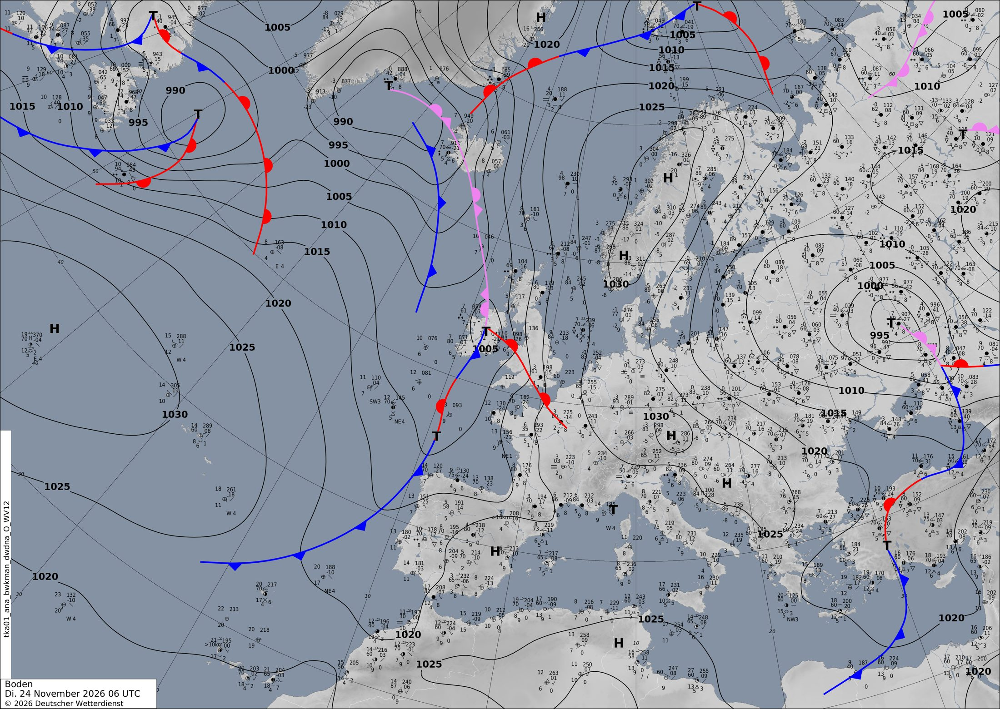

Una DANA cruza de Vizcaya a Génova: lluvia en el Cantábrico y frío después
Un bloqueo sobre Noruega cierra el paso hacia el norte. La vaguada atlántica se estrangula sobre el golfo de Vizcaya, deja una DANA y esta cae hacia el Mediterráneo: lluvia fuerte en el Cantábrico y tormentas en Italia antes de que llegue el frío seco.
Europa y el Atlántico
Hoy martes el mapa de Europa tiene dos mitades. En el norte manda un anticiclón sobre Escandinavia, con 1035 hPa al norte de Suecia. En el Atlántico hay una borrasca modesta al suroeste de Irlanda (1005 hPa), y su frente frío se estira hasta el oeste de Galicia. En la carta del DWD de las 06 UTC lo verás como una línea azul con triángulos. En el satélite es la banda blanca y alargada que baja de Irlanda hacia la península: mira aquí.
Lo importante pasa en altura. En el mapa de 500 hPa, una vaguada atlántica baja hacia el golfo de Vizcaya y, en 24 horas, se estrangula. A medianoche de mañana el modelo dibuja un círculo cerrado de 543 dam al norte del golfo de Vizcaya: es una DANA, una bolsa de aire frío que se ha separado de la circulación general. La corriente en chorro la rodea por el sur, con hasta 246 km/h al noroeste de Galicia. Debajo, la borrasca baja a 999 hPa al suroeste de Bretaña: fíjate en el mapa de altura.
¿Por qué se separa? Porque el norte está cerrado. Sobre Noruega se instala un bloqueo, una dorsal que se queda quieta y desvía todo lo que llega del oeste. La DANA no puede seguir hacia el nordeste y se escurre hacia el sureste. Pasado mañana a medianoche está ya en el golfo de Génova (544 dam), con una borrasca de 1003 hPa en el norte de Italia. Ahí el aire frío de arriba queda sobre un Mediterráneo todavía templado, y eso da mucha inestabilidad. El modelo pone hasta 78 mm en 12 horas cerca de Roma y, la noche del jueves al viernes, 93 mm frente a Grecia: mira aquí.
Mientras tanto, en el Atlántico norte otra borrasca se ahonda muy deprisa. Pasa de 991 hPa mañana a 973 el jueves y a 950 hPa a medianoche del viernes, al oeste de Islandia. Está cerca de ser una ciclogénesis explosiva. Fíjate en lo juntas que van sus isobaras: mira aquí. Pero está lejos, y el bloqueo la frena antes de que llegue a Europa.
Un aviso: a 72 horas, la ruta exacta de la DANA y el sitio donde descargue más pueden cambiar de una pasada del modelo a la siguiente.
En península ibérica y Baleares
Hoy entra el frente frío por el oeste. Entre las 00 y las 12 UTC deja ya hasta 26,6 mm en algún punto del noroeste. Delante del frente sopla aire templado del suroeste, y a mediodía de hoy se llegan a 26,5 °C en algún punto de la península.
Después pasa la DANA por el norte y llega el aire frío. La temperatura media a 850 hPa, el termómetro de las masas de aire, baja de unos 8 °C hoy a 2,7 °C pasado mañana. Con aire frío arriba y mar templado abajo, el CAPE sube hasta 848 J/kg a medianoche de mañana, así que puede haber chubascos con alguna tormenta en la costa.
La lluvia más fuerte cae en el Cantábrico oriental. Detrás de la borrasca el viento gira al norte y empuja aire húmedo contra la cordillera, que lo obliga a subir: es lluvia orográfica. El modelo pone hasta 60,5 mm entre las 12 y las 24 UTC de mañana en el País Vasco y otros 40 mm el jueves por la mañana: mira aquí.
El viento llega a 70 km/h mañana a mediodía. Con la baja en Génova y las presiones altas al oeste, se forma la situación típica de cierzo en el valle del Ebro y tramontana en el Ampurdán y Baleares.
Para el viernes, un pequeño anticiclón de 1021 hPa se coloca sobre Castilla y León. Con cielo despejado y poco viento, el suelo pierde calor toda la noche. A medianoche del viernes algunas zonas altas del interior bajan a −9,8 °C. Es el terreno de la inversión térmica: hace más frío en los valles que unos cientos de metros más arriba. En el Mediterráneo queda una vaguada floja sobre Murcia, con algún chubasco suelto, de no más de 7 mm.
En Francia
En Francia el frente frío cruza hoy de oeste a este, con hasta 20,9 mm entre las 00 y las 12 UTC y 22,3 mm por la tarde. A medianoche, la borrasca de 999 hPa frente a Bretaña junta las isobaras y el viento llega a 58 km/h en el oeste.
Mañana es el día más movido. La DANA atraviesa el país camino del Mediterráneo y deja hasta 66,2 mm en 12 horas entre las 00 y las 12 UTC, con un CAPE de 872 J/kg. Son chubascos tormentosos, seguramente en el sur, por donde la baja sale hacia el Mediterráneo. Al formarse la borrasca en Génova, el aire baja por el valle del Ródano hacia ella: es la situación clásica del mistral. El viento llega a 70 km/h a mediodía: mira aquí. El jueves todavía caen hasta 60,5 mm cerca del País Vasco francés.
Luego entra el frío del nordeste. A medianoche del viernes, el aire a 850 hPa baja a −8,5 °C en el noreste, y en los valles altos de los Alpes el termómetro marca −17,5 °C.
París y alrededores. La presión es alta (1025 hPa) y el viento casi no sopla. Hoy: 0–4 °C a medianoche y 6,5–7,5 °C a mediodía, seco, con viento flojo (8–13 km/h). Mañana: noche más templada por las nubes (3–5 °C) y 5–8 °C a mediodía. Lloverá sobre todo de madrugada y por la mañana (hasta 4,6 mm de 00 a 12 UTC) y apenas 1,2 mm por la tarde. Viento de 9–13 km/h. Jueves: 4–6,5 °C a medianoche, pero solo unos 3 °C a mediodía. Seco y con viento flojo (hasta 12 km/h). Viernes: la presión sube a 1019 hPa y a medianoche helará, entre −3,3 y −2 °C, con el aire en calma (6 km/h) y sin lluvia: mira aquí.
Lección del día: DANA (depresión aislada en niveles altos)
Hoy vamos a ver cómo nace una DANA y por qué importa.
- Abre el mapa de 500 hPa de hoy: mira aquí. Al oeste de Irlanda las líneas forman una U abierta hacia el norte: es una vaguada, todavía unida a la circulación general.
- Avanza a +24 h: mira aquí. Al norte del golfo de Vizcaya aparece un contorno cerrado (543 dam). Esa línea que se cierra sobre sí misma es la señal de una DANA: el aire frío ha quedado aislado.
- Con la capa del chorro puesta, mira el morado: la corriente en chorro rodea la DANA por el sur y no la cruza. Por eso la DANA ya no avanza con la corriente del oeste.
- Pasa a +48 h con la precipitación: mira aquí. La DANA está en Génova, y las manchas de lluvia más fuertes quedan sobre todo en su lado este, sobre Italia. Ahí el aire asciende.
Regla práctica: si ves una isohipsa cerrada en 500 hPa, busca la lluvia en su lado delantero (al este).
Ponte a prueba
3 preguntas sobre el tiempo de hoy. Puedes mirar el mapa antes de contestar.
¿Por qué la baja fría que mañana está sobre el golfo de Vizcaya acaba pasado mañana en el golfo de Génova, en vez de irse hacia el nordeste?
En el mapa de 500 hPa de mañana a medianoche, ¿qué señal te dice que al norte del golfo de Vizcaya hay una DANA?
¿Por qué el interior de la península tendrá mucho frío a medianoche del viernes, aunque el aire a 850 hPa no sea especialmente frío?
Con el anticiclón de 1021 hPa sobre Castilla y León, sin nubes ni viento, el aire frío se queda en los valles. Eso es una inversión térmica. mira aquí
La carta oficial
Análisis de superficie del servicio meteorológico alemán (DWD) válido el 24/11/2026 a las 06 UTC, dibujado por meteorólogos a partir de observaciones. Aquí sí hay frentes: azul con triángulos, frío; rojo con semicírculos, cálido; morado, ocluido. Las borrascas son T y los anticiclones H. Cómo leer esta carta.
